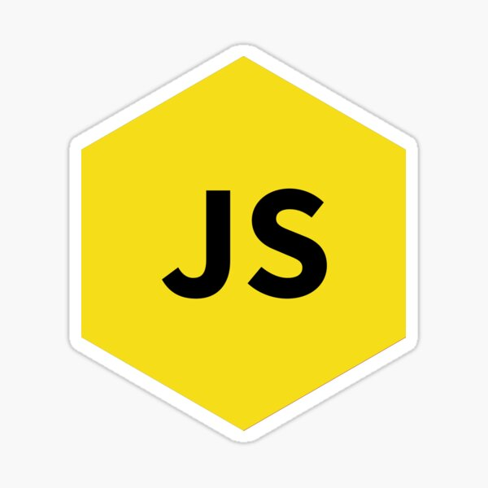

Событийный цикл (Event loop) является ключом к понимаю асинхронного программирования на JS. Сам язык однопоточный, но событийный цикл позволяет создать дополнительные потоки, для ускорения работы кода
Стэк вызововов это механизм предназначеный для отслеживания текущего местонахождения интерпретатора в скрипте. Он вызывает несколько функций и определяет, какая выполняется в данный момент, какие функции внутри и какая функция будет вызвана следующей. Тема довольно интересная, особенно учитывая факт, любые данные от сервера запрашиваются асинхронно